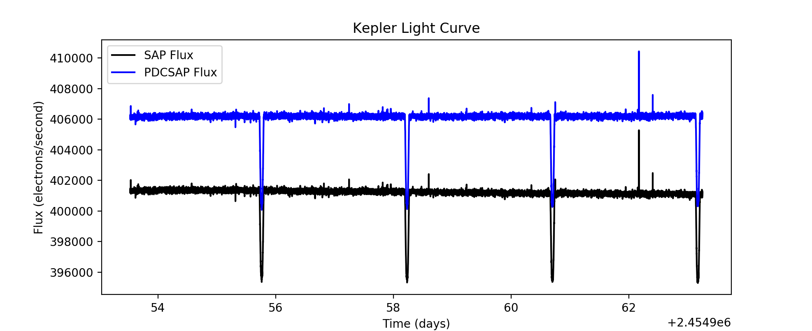
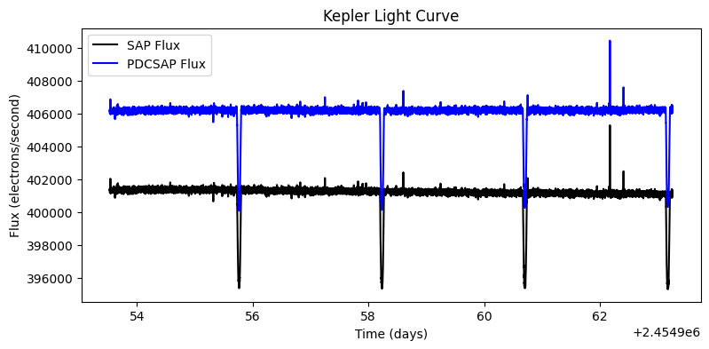
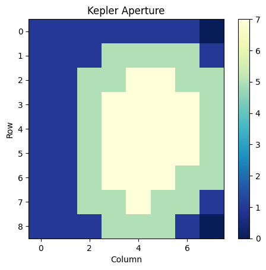

Using Kepler Data to Plot a Light Curve#

This notebook tutorial demonstrates the process of loading and extracting information from Kepler light curve FITS files to plot a light curve and display the photometric aperture.
Table of Contents#
Introduction
Imports
Getting the Data
Reading FITS Extensions
Plotting a Light Curve
The Aperture Extension
Additional Resources
About this Notebook
Introduction#
Light curve background: A light curve is a plot of flux versus time that shows the variability of light output from an object. This is one way to find planets periodically transitting a star. The light curves made here will plot the corrected and uncorrected fluxes from Kepler data of object KIC 11446443 (TRES-2).
Some notes about the file: kplr_011446443-2009131110544_slc.fits
The filename contains phrases for identification, where
kplr = Kepler
011446443 = Kepler ID number
2009131110544 = year 2009, day 131, time 11:05:44
slc = short cadence
Defining some terms:
Cadence: the frequency with which summed data are read out. Files are either short cadence (a 1 minute sum) or long cadence (a 30 minute sum).
SAP Flux: Simple Aperture Photometry flux; flux after summing the calibrated pixels within the optimal aperture
PDCSAP Flux: Pre-search Data Conditioned Simple Aperture Photometry; these are the flux values nominally corrected for instrumental variations.
BJD: Barycentric Julian Day; this is the Julian Date that has been corrected for differences in the Earth’s position with respect to the Solar System Barycentre (center of mass of the Solar System).
HDU: Header Data Unit; a FITS file is made up of Header or Data units that contain information, data, and metadata relating to the file. The first HDU is called the primary, and anything that follows is considered an extension.
For more information about the Kepler mission and collected data, visit the Kepler archive page. To read more details about light curves and relevant data terms, look in the Kepler archive manual.
Imports#
Let’s start by importing some libraries to the environment:
matplotlib notebook for creating interactive plots
astropy.io fits for accessing FITS files
astropy.table Table for creating tidy tables of the data
matplotlib for plotting data
%matplotlib inline
from astropy.io import fits
from astropy.table import Table
import matplotlib.pyplot as plt
Getting the Data#
Start by importing libraries from Astroquery. For a longer, more detailed description using of Astroquery, please visit this tutorial or read the Astroquery documentation.
from astroquery.mast import Observations
Next, we need to find the data file. This is similar to searching for the data using the MAST Portal in that we will be using certain keywords to find the file. The target name of the object we are looking for is kplr011446443, collected by the Kepler spacecraft.
keplerObs = Observations.query_criteria(target_name='kplr011446443', obs_collection='Kepler')
keplerProds = Observations.get_product_list(keplerObs[1])
yourProd = Observations.filter_products(keplerProds, extension='kplr011446443-2009131110544_slc.fits',
mrp_only=False)
yourProd
| obsID | obs_collection | dataproduct_type | obs_id | description | type | dataURI | productType | productGroupDescription | productSubGroupDescription | productDocumentationURL | project | prvversion | proposal_id | productFilename | size | parent_obsid | dataRights | calib_level | filters |
|---|---|---|---|---|---|---|---|---|---|---|---|---|---|---|---|---|---|---|---|
| str6 | str6 | str10 | str36 | str60 | str1 | str110 | str7 | str28 | str8 | str1 | str6 | str1 | str7 | str44 | int64 | str6 | str6 | int64 | str6 |
| 601031 | Kepler | timeseries | kplr011446443_sc_Q113313330333033302 | Lightcurve Short Cadence (CSC) - Q0 | C | mast:KEPLER/url/missions/kepler/lightcurves/0114/011446443/kplr011446443-2009131110544_slc.fits | SCIENCE | Minimum Recommended Products | SLC | -- | Kepler | -- | EX_STKS | kplr011446443-2009131110544_slc.fits | 1457280 | 601031 | PUBLIC | 2 | KEPLER |
Now that we’ve found the data file, we can download it using the reults shown in the table above:
Observations.download_products(yourProd, mrp_only=False, cache=False)
Downloading URL https://mast.stsci.edu/api/v0.1/Download/file?uri=mast:KEPLER/url/missions/kepler/lightcurves/0114/011446443/kplr011446443-2009131110544_slc.fits to ./mastDownload/Kepler/kplr011446443_sc_Q113313330333033302/kplr011446443-2009131110544_slc.fits ...
[Done]
| Local Path | Status | Message | URL |
|---|---|---|---|
| str95 | str8 | object | object |
| ./mastDownload/Kepler/kplr011446443_sc_Q113313330333033302/kplr011446443-2009131110544_slc.fits | COMPLETE | None | None |
Click on the blue URL above to download the file. You are now ready to complete the rest of the notebook.
Reading FITS Extensions#
Now that we have the file, we can start working with the data. We will begin by assigning a shorter name to the file to make it easier to use. Then, using the info function from astropy.io.fits, we can see some information about the FITS Header Data Units:
filename = "./mastDownload/Kepler/kplr011446443_sc_Q113313330333033302/kplr011446443-2009131110544_slc.fits"
fits.info(filename)
Filename: ./mastDownload/Kepler/kplr011446443_sc_Q113313330333033302/kplr011446443-2009131110544_slc.fits
No. Name Ver Type Cards Dimensions Format
0 PRIMARY 1 PrimaryHDU 58 ()
1 LIGHTCURVE 1 BinTableHDU 155 14280R x 20C [D, E, J, E, E, E, E, E, E, J, D, E, D, E, D, E, D, E, E, E]
2 APERTURE 1 ImageHDU 48 (8, 9) int32
**No. 0 (Primary): **
This HDU contains meta-data related to the entire file.**No. 1 (Light curve): **
This HDU contains a binary table that holds data like flux measurements and times. We will extract information from here when we define the parameters for the light curve plot.**No. 2 (Aperture): **
This HDU contains the image extension with data collected from the aperture. We will also use this to display a bitmask plot that visually represents the optimal aperture used to create the SAP_FLUX column in HDU1.
For more detailed information about header extensions, look here.
Let’s say we wanted to see more information about the extensions than what the fits.info command gave us. For example, we can access information stored in the header of the Binary Table extension (No. 1, LIGHTCURVE). The following line opens the FITS file, writes the first HDU extension into header1, and then closes the file. Only 24 columns are displayed here but you can view them all by adjusting the range:
with fits.open(filename) as hdulist:
header1 = hdulist[1].header
print(repr(header1[0:24])) # repr() prints the info into neat columns
XTENSION= 'BINTABLE' / marks the beginning of a new HDU
BITPIX = 8 / array data type
NAXIS = 2 / number of array dimensions
NAXIS1 = 100 / length of first array dimension
NAXIS2 = 14280 / length of second array dimension
PCOUNT = 0 / group parameter count (not used)
GCOUNT = 1 / group count (not used)
TFIELDS = 20 / number of table fields
TTYPE1 = 'TIME ' / column title: data time stamps
TFORM1 = 'D ' / column format: 64-bit floating point
TUNIT1 = 'BJD - 2454833' / column units: barycenter corrected JD
TDISP1 = 'D14.7 ' / column display format
TTYPE2 = 'TIMECORR' / column title: barycenter - timeslice correction
TFORM2 = 'E ' / column format: 32-bit floating point
TUNIT2 = 'd ' / column units: day
TDISP2 = 'E13.6 ' / column display format
TTYPE3 = 'CADENCENO' / column title: unique cadence number
TFORM3 = 'J ' / column format: signed 32-bit integer
TDISP3 = 'I10 ' / column display format
TTYPE4 = 'SAP_FLUX' / column title: aperture photometry flux
TFORM4 = 'E ' / column format: 32-bit floating point
TUNIT4 = 'e-/s ' / column units: electrons per second
TDISP4 = 'E14.7 ' / column display format
TTYPE5 = 'SAP_FLUX_ERR' / column title: aperture phot. flux error
We can also view a table of the data from the Binary Table extension. This is where we can find the flux and time columns to be plotted later. Here only the first four rows of the table are displayed:
with fits.open(filename) as hdulist:
binaryext = hdulist[1].data
binarytable = Table(binaryext)
binarytable[1:5]
| TIME | TIMECORR | CADENCENO | SAP_FLUX | SAP_FLUX_ERR | SAP_BKG | SAP_BKG_ERR | PDCSAP_FLUX | PDCSAP_FLUX_ERR | SAP_QUALITY | PSF_CENTR1 | PSF_CENTR1_ERR | PSF_CENTR2 | PSF_CENTR2_ERR | MOM_CENTR1 | MOM_CENTR1_ERR | MOM_CENTR2 | MOM_CENTR2_ERR | POS_CORR1 | POS_CORR2 |
|---|---|---|---|---|---|---|---|---|---|---|---|---|---|---|---|---|---|---|---|
| float64 | float32 | int32 | float32 | float32 | float32 | float32 | float32 | float32 | int32 | float64 | float32 | float64 | float32 | float64 | float32 | float64 | float32 | float32 | float32 |
| 120.52992386784899 | 0.00096672785 | 5501 | 401288.16 | 91.51187 | 2598.1086 | 0.5752603 | 406100.9 | 127.528824 | 0 | nan | nan | nan | nan | 621.2181187542091 | 0.0002101067 | 848.8972881655714 | 0.00029125414 | 0.0002031729 | -0.0025746305 |
| 120.53060508973431 | 0.00096674974 | 5502 | 401425.53 | 91.53448 | 2598.0261 | 0.57525027 | 406242.22 | 125.212105 | 0 | nan | nan | nan | nan | 621.2190207168474 | 0.00021018942 | 848.8935790650855 | 0.0002912894 | 0.00021144762 | -0.0025837936 |
| 120.53128621167707 | 0.0009667717 | 5503 | 401172.0 | 91.517265 | 2597.9438 | 0.5752402 | 405984.03 | 123.31339 | 0 | nan | nan | nan | nan | 621.2179228162092 | 0.00021032244 | 848.894852260174 | 0.0002914222 | 0.00021972114 | -0.0025929555 |
| 120.53196743356966 | 0.00096679357 | 5504 | 401473.62 | 91.53064 | 2597.8613 | 0.5752302 | 406293.0 | 121.84987 | 0 | nan | nan | nan | nan | 621.2198263101714 | 0.00021020704 | 848.8961790332079 | 0.00029115527 | 0.00022799587 | -0.0026021185 |
Plotting a Light Curve#
Now that we have seen and accessed the data, we can begin to plot a light curve:
Open the file using command fits.open. This will allow the program to read and store the data we will manipulate to be plotted. Here we’ve also renamed the file with a phrase that is easier to handle (see line 1).
Start by calibrating the time. Because the Kepler data is in BKJD (Kepler Barycentric Julian Day) we need to convert it to time in Julian Days (BJD) if we want to be able to compare it to other outside data. For a more detailed explanation about time conversions, visit the page 13 or page 17 of the Kepler Archive Manual.
Read in the BJDREF times, both the integer (BJDREFI) and the floating point (BJDREFF). These are found as columns of data in the binary extension of the header.
Read in the columns of times and fluxes (both uncorrected and corrected) from the data.
with fits.open(filename, mode="readonly") as hdulist:
# Read in the "BJDREF" which is the time offset of the time array.
bjdrefi = hdulist[1].header['BJDREFI']
bjdreff = hdulist[1].header['BJDREFF']
# Read in the columns of data.
times = hdulist[1].data['time']
sap_fluxes = hdulist[1].data['SAP_FLUX']
pdcsap_fluxes = hdulist[1].data['PDCSAP_FLUX']
Now that the appropriate data has been read and stored, convert the times to BJDS by adding the BJDREF times to the data of times.
Finally, we can plot the fluxes against time. We can also set a title and add a legend to the plot. We can label our fluxes accordingly and assign them colors and styles (“-k” for a black line, “-b” for a blue line).
# Convert the time array to full BJD by adding the offset back in.
bjds = times + bjdrefi + bjdreff
plt.figure(figsize=(9, 4))
# Plot the time, uncorrected and corrected fluxes.
plt.plot(bjds, sap_fluxes, '-k', label='SAP Flux')
plt.plot(bjds, pdcsap_fluxes, '-b', label='PDCSAP Flux')
plt.title('Kepler Light Curve')
plt.legend()
plt.xlabel('Time (days)')
plt.ylabel('Flux (electrons/second)')
plt.show()

The Aperture Extension#
We can also make a plot of the third HDU; the image extension (No. 2, APERTURE). This data is stored as an array of integers that encodes which pixels were collected from the spacecraft and which were used in the optimal aperture (look here for more information on the aperture extension).
First, we need to re-open the FITS file and access the header. Next, we read in the image extension and print it as an array:
with fits.open(filename) as hdulist:
imgdata = hdulist[2].data
print(imgdata)
[[1 1 1 1 1 1 1 0]
[1 1 1 5 5 5 5 1]
[1 1 5 5 7 7 5 5]
[1 1 5 7 7 7 7 5]
[1 1 5 7 7 7 7 5]
[1 1 5 7 7 7 7 5]
[1 1 5 7 7 7 5 5]
[1 1 5 5 7 5 5 1]
[1 1 1 5 5 5 1 0]]
We can also show the data in a plot:
plt.figure(2)
plt.title('Kepler Aperture')
plt.imshow(imgdata, cmap=plt.cm.YlGnBu_r)
plt.xlabel('Column')
plt.ylabel('Row')
plt.colorbar()
<matplotlib.colorbar.Colorbar at 0x7f65c493acd0>

Additional Resources#
For more information about the MAST archive and details about mission data:
MAST API
Kepler Archive Page (MAST)
Kepler Archive Manual
Exo.MAST website
About this Notebook#
Author: Josie Bunnell, STScI SASP Intern
Updated On: 08/10/2018

{kind=link}